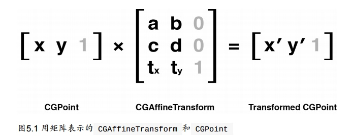
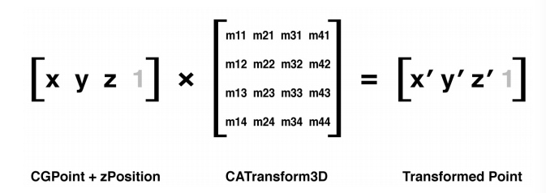
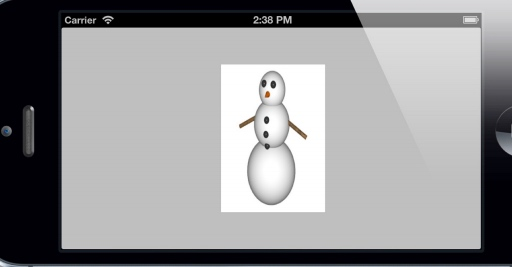
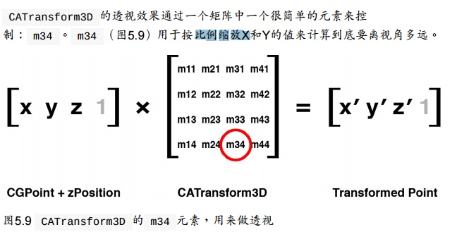
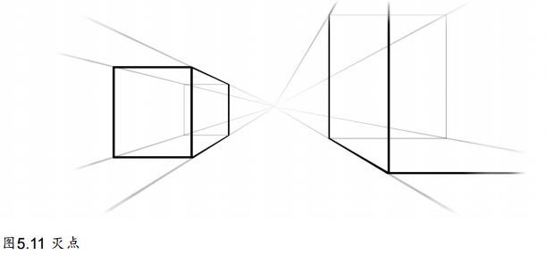
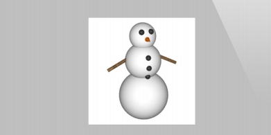
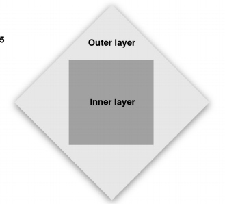
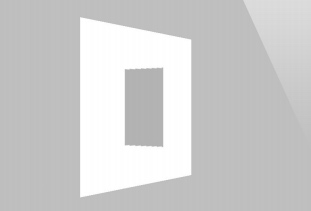
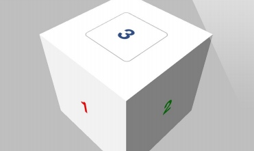

仿射变换
UIView的transform属性是一个CGAffineTransform类型，用于二维空间的旋转，缩放和平移.
CGAffineTransform是一个可以和二维空间向量（例如 CGPoint ）做乘法的3X2的矩阵；

上图中的灰色数值只是为了保证左边列数与右边行数相同可以做矩阵运算，其计算结果不保留也没有任何意义
CGAffineTransform
CGAffineTransformMakeRotation(CGFloat angle)
CGAffineTransformMakeScale(CGFloat sx, CGFloat sy)
CGAffineTransformMakeTranslation(CGFloat tx, CGFloat ty)
/**
旋转和缩放变换都可以很好解释--分别旋转或者缩放一个向量的值。平移变换是指
每个点都移动了向量指定的x或者y值--所以如果向量代表了一个点，那它就平移了
这个点的距离。
*/
注意
UIView可以通过设置tranform属性变换,它只是封装了内部的图层变换
CALayer也有transfrom属性，它的类型是CATransfrom3D并不是CGAffiTransfrom
CALayer对应UIView的transform属性的是affineTransform
CGAffiTransfrom一看名字就是基于Core Graphics的
#define RADIANS_TO_DEGREES(x) ((x)/M_PI*180.0)
//一个pi代表180°
CGAffineTransform transform = CGAffineTransformMakeRotation(M_PI_4);
self.layerView.layer.affineTransform = transform;
混合变换
Core Graphics提供了可在一个一个变换基础上做其他变化的函数
CGAffineTransformRotate(CGAffineTransform t, CGFloat angle)
CGAffineTransformScale(CGAffineTransform t, CGFloat sx, CGFloat sy)
CGAffineTransformTranslate(CGAffineTransform t, CGFloat tx, CGFloat ty)
还有一个例外的：
CGAffineTransformIdentity这是一个什么都不做的变换, CGAffineTransform 类型的空值,即单位矩阵。
//要混合两个已经存在的变换矩阵，做一个新的变换
CGAffineTransformConcat(CGAffineTransform t1, CGAffineTransform t2);
注意
当我们按顺序进行一些列变换的时候，变换的顺序是会影响结果的，比如旋转之后的平移和平移之后的旋
转结果可能不同。
3D变换
CGAffineTransform 类型属于Core Graphics框架.因为Core Graphics是一套2D绘图的API，因此仅仅对2D变换有效.
CALayer的transform属性(CATransform3D类型),可以让图层进行3D移动或者旋转
和CGAffiTranform类似,CATransform3D也是一个矩阵（在3维空间做变换的4*4矩阵）

Core Animation框架也有为我们提供一系列方法来创建和组合CATransform3D类型的矩阵，与CGAffiTransform不同的是其平移和缩放多了参数z 旋转 多了x.y.z
CATransform3DMakeRotation(CGFloat angle, CGFloat x, CGFloat y, CGFloat z)
CATransform3DMakeScale(CGFloat sx, CGFloat sy, CGFloat sz)
CATransform3DMakeTranslation(Gloat tx, CGFloat ty, CGFloat tz)
举个栗子:
//绕Y轴旋转45度
CATransform3D transform = CATransform3DMakeRotation(M_PI_4, 0, 1, 0);
self.layerView.layer.transform = transform;

这样的效果看起来并没有旋转而只是水平方向的压缩,这是因为我们用斜的视角看它，并不是透视
透视投影
我们在上面做的变换是等距投影：远处的物体和近处的物体保持同样的缩放比例
正常情况是物体远离我们由于视角原因会变小才对 我们需要引入投影变换（z变换）来对矩阵做一些修改，Core Animation并没有提供透视变换函数，我们需要手动改动矩阵(easy):

**m34 默认为0，我们可以设置其为-1/d来应用透视效果(d为视角和屏幕距离,估算测试一下就ok了,大概500-1000,值越小透视效果越明显但是太小会失真，太大又几乎失去透视效果) **
举个栗子:
CATransform3D transform = CATransform3DIdentity;
//apply perspective 我曹 真的直接m34就行了
transform.m34 = - 1.0 / 500.0;
//rotate by 45 degrees along the Y axis
transform = CATransform3DRotate(transform, M_PI_4, 0, 1, 0);
//apply to layer
self.layerView.layer.transform = transform;
灭点
在透视绘图时我们说当远离视角的物体会变小,当远到一个极限的时候就会变陈一个点,最终所有物体都会汇聚消失在这同一个点. 即灭点
在现实中，这个点通常是视图的中心,或者至少是包含所有3D对象的视图中心
Core Animation定义了这个点位于变换图层的anchorPoint（通常位于图层中心，但也有例外）
这就是说，当图层发生变换时，这个点永远位于图层变换之前anchorPoint的位置。

注意
当改变一个图层的position，你也改变了它的灭点，做3D变换的时候要时刻记住这一点，当你视图通过调整 m34 来让它更加有3D效果，应该首先把它放置于屏幕中央，然后通过平移来把它移动到指定位置（做平移变换是不会改变position的）（而不是直接改变它的position）灭点会处于变化之前的位置,这样的话就能保证所有的3D图层都共享一个灭点。
sublayerTransform
根据上面知识,如果我们多个视图做3D变换,我们需要分别改变其M34并且确保在变换前同一个position,而且我们不能直接在xib中摆放视图,这样就很麻烦了
CALayer有个属性sublayerTransform.也是CATransform3D类型的,但是它会影响到所有子图层,即我们可以通过设置图层的这个属性来使所有子视图做同样的变换，而且确保了所有子图层灭点在容器图层的中点处.
容器图层做变换时其上图层也都会做变换的,只不过我们如果不设置容器图层的sublayerTransform属性的话，子图层要在做3D变换的话还要再设置m34而且要保证灭点，也就是这个属性作用就只是保证其上的子图层的m34和灭点与父图层一致
这个属性对于容器视图来说与transform属性没有什么区别，都是做一个变换
注意
我们通常设置最大视图的sublayerTransform为CATransform3DIdentity; 这样在其上的子视图可以随意进行3D变换都可保证其灭点位置在同一个位置.
背面
因为我们做的变换是透视的，我们可以从背面观察这张图像，发现其背面为正面图片的镜像图片,可以知道图层是双面绘制的
有时候我们是永远都看不到图层的背面,所以我们没必要浪费CPU来绘制
CALayer有一个叫做 doubleSided 的属性来控制图层的背面是否要被绘制。BOOL类型,当设置为NO时，如果图层正面从视角中消失，这个图层将不会被绘制.

扁平化图层
我们在做二维变换（用CATranform3D绕z轴旋转也是二维变换）知道当我们做个相反变换的时候是可以将图层或视图恢复原状的。

如上图,外部图层旋转45度后内部图层反向旋转45度是可以恢复正常状态的
那么对于3D变换：
我们将外面图层绕Y旋转,然后将内图层绕Y反向旋转
结果:

我们可以看到,内部的图层仍然向左侧旋转，并且发生了扭曲。
这是因为Core Animation内的图层并不都存在同一个3D空间.每个图层的3D场景其实是扁平化的，你所看到的3D场景只是绘制在图层表面。
也是因为如此:用Core Animation创建非常复杂的3D场景变得十分困难。你不能够使用图层树去创建一个3D结构的层级关系--在相同场景下的任何3D表面必须和同样的图层保持一致，这是因为每个的父视图都把它的子视图扁平化了。在之后我们会用CATransformLayer的子类来解决这个问题
固体对象
一个固态的3D对象
我们来创建一个固体对象:
//创建固体对象
- (void)three_dimensionaObject {
CATransform3D perspective = CATransform3DIdentity;
perspective.m34 = -1.0 / 500.0;
perspective = CATransform3DRotate(perspective, -M_PI_4, 1, 0, 0);
perspective = CATransform3DRotate(perspective, -M_PI_4, 0, 1, 0);
self.containView.layer.sublayerTransform = perspective;
//add cube face 1
CATransform3D transform = CATransform3DMakeTranslation(0, 0, 100);
[self addFaceWith:0 transform:transform];
transform = CATransform3DMakeTranslation(100, 0, 0);
transform = CATransform3DRotate(transform, M_PI_2, 0, 1, 0);
[self addFaceWith:1 transform:transform];
transform = CATransform3DMakeTranslation(-100, 0, 0);
transform = CATransform3DRotate(transform, -M_PI_2, 0, 1, 0);
[self addFaceWith:2 transform:transform];
transform = CATransform3DMakeTranslation(0, 100, 0);
transform = CATransform3DRotate(transform, -M_PI_2, 1, 0, 0);
[self addFaceWith:3 transform:transform];
transform = CATransform3DMakeTranslation(0, -100, 0);
transform = CATransform3DRotate(transform, M_PI_2, 1, 0, 0);
[self addFaceWith:4 transform:transform];
transform = CATransform3DMakeTranslation(0, 0, -100);
[self addFaceWith:5 transform:transform];
}
- (void)addFaceWith:(NSInteger)index transform:(CATransform3D)transform {
UIView *layV = [self.layViewCollection objectAtIndex:index];
[self.containView addSubview:layV];
CGSize containerSize = self.containView.bounds.size;
layV.center = CGPointMake(containerSize.width / 2.0, containerSize.height/2);
layV.bounds = CGRectMake(0, 0, 200, 200);
layV.layer.transform = transform;
}
光亮和阴影
由于我们只是简单几个图层的拼接,所以这个立体对光线并没有概念(没有棱角).我们需要自己做这个立体的阴影效果.
- 我们可以直接以通过改变每个面的背景颜色或者直接用带光亮效果的图片来调整。
- 如果需要动态地创建光线效果，可以根据每个视图的方向应用不同的alpha值做出半透明的阴影图层.但为了计算阴影图层的不透明度，你需要得到每个面的正太向量（垂直于表面的向量），然后根据一个想象的光源计算出两个向量叉乘结果。叉乘代表了光源和图层之间的角度，从而决定了它有多大程度上的光亮。
为了达到第二种效果:
我们这里用GLKit框架来做向量的计算.(需要引入GLKit库来运行代码)每个面的CATransform3D都被转换成GLKMatrix4，然后通过GLKMatrix4GetMatrix3函数得出一个3×3的旋转矩阵。这个旋转矩阵指定了图层的方向，然后可以用它来得到正太向量的值
点击事件

我们对于上面的固体对象,并不能点击3触发事件,这是因为我们添加视图时4.5.6是在3之前添加的,点击事件的处理由视图在父视图中的顺序决定，而不是3D空间的z轴顺序.因此即使我们此时看不到4.5.6,但是荏苒会拦截点击事件.
doubleSided属性可以控制是否绘制视图后面的内容,但是设置这个属性为NO不起作用，因为即使背对相机而隐藏的视图仍然会响应点击事件(这和通过设置 hidden 属性或者设置 alpha 为0而隐藏的视图不同，那两种方式将不会响应事件).
我们正确方式是:
- 把除了表面3的其他视图 userInteractionEnabled 属性都设置成 NO 来禁止事件传递
- 简单通过代码把视图3覆盖在视图6上
- 等等
视图中图层添加的层级顺序会比屏幕上显示的顺序更有意义